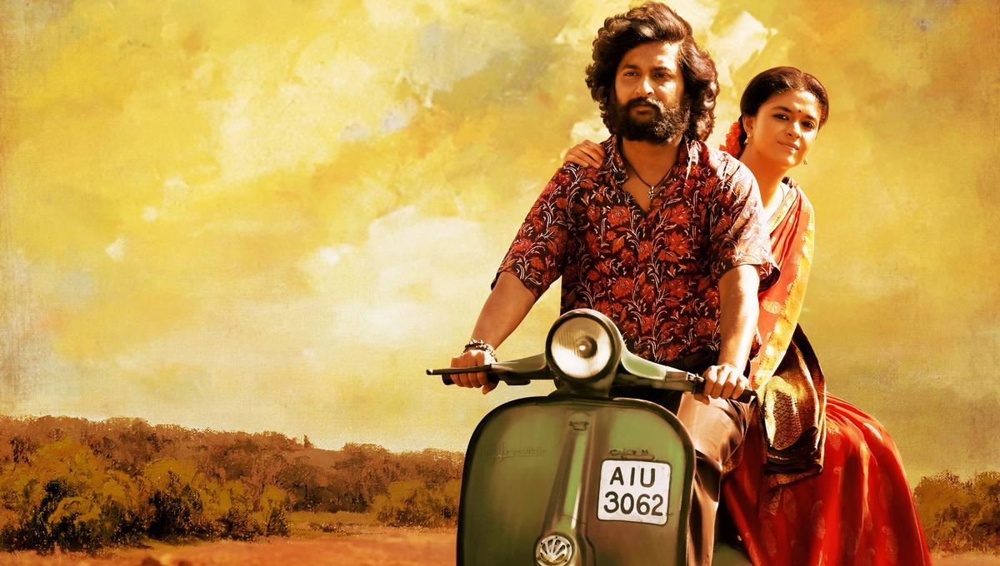

FAVOURITE SONG

Chamkeela angeelesi
O Vadhiney
Chaaku lekkundetodey
O Vadhiney
Kandlaku ainaa betti
kattholey
Kannetla koduthundeney
Sinigina baneeneysi
O Vadhiney
Nattintla koosuntadey
O Vadhiney
Maasina lungi yesi
yeppudu
Manchamlaney pantadey
yeh Pendlaina koththala
aththarlu poosinney
Nee seera singhulu patti
yenakenaka thiriginney
Muddhulisthundey
poolu thesthundey
Sakkera lekka nee
maatalumtundey
Maarey nee theeru
perigey nee noru
Mandhu kalavaataithiney
Kadupula intha bosi
O Vadhiney
Koduthadey bandakesi
O Vadhiney
Amaasa punnaaniko
atlatla
Akkaraku pakkakotthadey
Chamkeela Angeelodey...
Naku Jhumkeelu Anna thedey...
♬Created by Prem♬
F: veedu vantintla nenunte
shatungaa vatthundey
Vankara nadumu gicchuthundey
Nedu yentha singarinchina
Vankalu peduthunde
Thaithakka laadakantunde
M: Kanta neeranna pettakunda
santibidda lekka Ninnu
Aluguthuntey budhara giyyaledhaa
Nuvvu seetiki maatiki
gintha dhaanni ganthajesi
ijjathantha bazaar lesthalevaa
F: Yem gaali sokeno…
veennetthi thirigeno..
Paathabaddanemo
chethanaitha ledho
Ultaa nannitla
mandhi mungatla
badhnaam jetthadey
F: Chamkeela angeelesi
O Vadhiney
Chaaku lekkundetodey
O Vadhiney
Kandlaku ainaa betti
kattholey
Kannetla koduthundeney
M: Noridisi adagadhuraa
baammardhi
Cheppindhi cheyyadhuraa
baammardhi
Pakkintla koosuntadhi
naa meedha
Chaadeelu jepthuntadhi
Naa gonthu kosindrantu
bammardhi
Sokaalu peduthuntadhi
bammardhi
Muchatlu jeppabothey
meeyakka
Moothantha thipthuntadhi
F: Seekatla unnaa vaakitla unnaa
Kantiki reppoley kaasthadu mogadu
Yentha lollaina nuvventa untey
Yedhuru nilsi vaadu gelsi vasthaadu
Gosalni joostha unnaa
yedhainaa
Gundella dhaasthaaduley
Nee bottu nee gaajuley
yenthainaa
Vaani pancha paanaaluley..